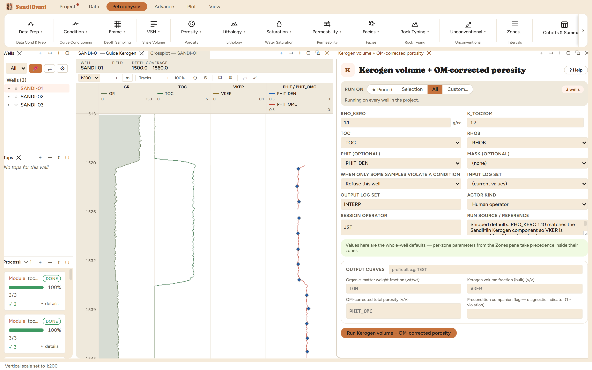
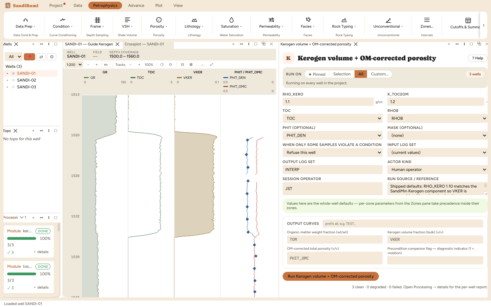

Converts TOC in weight percent to kerogen volume, and corrects total porosity for the organic matter that low-density kerogen inflates on the density log. Reach for it immediately after a TOC run in any organic-rich section: a density porosity computed through kerogen-bearing rock reads the kerogen as pore space, and every saturation and volumetric number downstream inherits that inflation until this correction removes it.
TOM = K_TOC2OM · TOC / 100 (organic-matter weight fraction) VKER = TOM · RHOB / ρ_kero (kerogen volume of the bulk rock) PHIT_OMC = PHIT − VKER (OM-corrected total porosity)
TOC counts only carbon; the factor K_TOC2OM (about 1.2 immature, up to about 1.35 mature) adds back the hydrogen, oxygen, nitrogen and sulfur of the organic matter. Dividing by the kerogen grain density converts weight to bulk volume, the Passey and Vernik-Nur conversion, and subtracting that volume from total porosity removes kerogen's apparent-porosity contribution to first order, since kerogen density sits near fluid density on the density log (Passey et al. 2010; Vernik & Nur 1992).

3 clean. In the hot zone the chain reproduces its own arithmetic exactly: TOC 3.66 wt% gives TOM = 1.2 · 0.0366 = 0.044 weight fraction, and at bulk density 2.3 g/cc, VKER = 0.044 · 2.3 / 1.10 = 0.092 of bulk volume, the stored maximum to the fourth decimal. The correction is material: nine porosity units of what the density log reads as porosity in that interval is kerogen, and PHIT_OMC sits below PHIT_DEN by exactly that amount. Over the barren rest of the section VKER is zero and the two porosities coincide, which is the visual check that the correction touches only organic rock.
The variant prices the density convention: RHO_KERO 1.25 on the same TOC scales VKER's maximum from 0.0921 to 0.0810, a ratio of 0.879, exactly 1.10/1.25, since the equation is linear in 1/ρ. A tenth-of-a-unit disagreement about kerogen density moves a nine-unit correction by one porosity unit; the pick matters, and it must match whatever mineral model the study also runs. Restoring 1.10 reproduces 0.0921.
